Text Format (DSL) Overview
If you are not super familiar with BPMN, I recommend you to refer to the BPMN Reference provided by Camunda.
BPMN diagrams might be easy in the beginning - just non-decorated tasks and events. To support this quicker phase in the beginning, there is a shorthand syntax for the common diagram elements. These are shown first. The shorthand syntax and full syntax can be mixed freely at will, but for a more uniform visual appearance I recommend to eventually convert everything to the full syntax when a diagram makes more use of it.
Events and Activities - Shorthand Syntax
Let’s look as this tiny example:
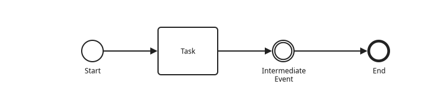
# Start
- Task
# Intermediate Event
. EndOne line usually corresponds to one statement. We have here in total four statements.
A statement begins with the type identifier (#, -, .), and then there are a bunch of further attributes.
Here we only have the display text attribute, which is mostly arbitrary free-form text.
In BPMN the most common thing you want to do is connect events and tasks via sequence flows. This is reflected by the file: You just list line-by-line events and tasks, and they are automatically connected by sequence flows.
A business process begins usually with some event (although there are exceptions).
Events are typed with the # sigil, hence the first line in the simple example is the following:
# StartAs you noticed, the # Start and # Intermediate Event have different visuals - bpmd
automatically chooses the correct symbol, you don’t have to think about it. The only exception is
the end of a process which has a dedicated sigil:
. EndDuring testing it looked more readable to have a dedicated sigil for ending a process, instead of
repurposing #.
Feel free to compile the argument with the start event or end event removed. If you feel the error messages are lacking, then open an issue with a constructive suggestion.
Gateways - Shorthand Syntax
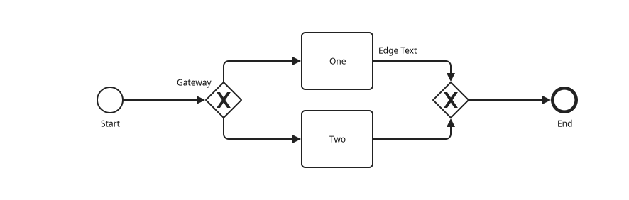
# Start
X Gateway ->one ->two (1)
- One <-one ->end"Edge Text" (2)
- Two <-two ->end
X <-end
. End| 1 | The node label Gateway is not yet rendered. |
| 2 | The edge label Edge Text is not yet rendered. |
Gateways break up the natural sequence flow from line to line. Instead, a gateway finishes it and
sends the sequence flow elsewhere via →one and →two "jumps". The "landing" counterparts are
marked via the ←label attributes.
In principle, you can add a display text to an edge via ←label"Display Text" but the actual
rendering is still waiting on the roadmap.
As you see, labels don’t need to be unique. The end label is reused, and this is possible as well
with on the branching gateway node:
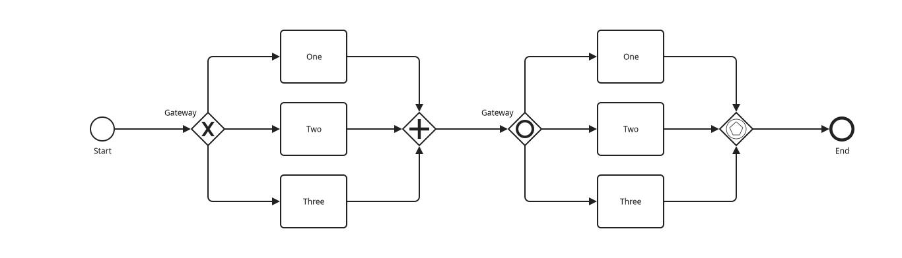
# Start
X Gateway ->branch
- One <-branch ->join
- Two <-branch ->join
- Three <-branch ->join
+ <-join
O Gateway ->branch2
- One <-branch2 ->join2
- Two <-branch2 ->join2
- Three <-branch2 ->join2
* <-join2
. EndYou might notice that the order of the nodes is not quite what is written in the file ("Three", "One", "Two" instead of "One", "Two", "Three"). This is also on the roadmap to nudge this vertical node order into the same order as they appeared in the file (if the order can be changed without affecting the layout quality).
You might be tempted to check whether you can mix + with X gateway nodes. At the moment this
works perfectly fine, but a correctness analysis to prevent this is on the roadmap.
Gateways - Full Syntax
-
XGExclusive -
XShorthand forXG. -
+GParallel -
+Shorthand for+G. -
OGInclusive -
OShorthand forOG. -
*GComplex -
*Shorthand for*G. -
#GEvent-Based
#G and +G can be the start of a business process (not supported yet).
Pools and Lanes
The examples above omitted pools and lanes to focus on the sequence flows and nodes. Here they are:
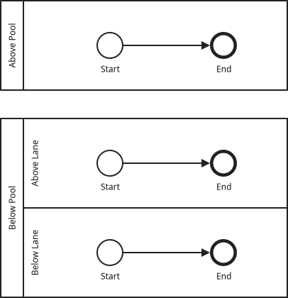
= Above Pool (1)
# Start
. End
= Below Pool
== Above Lane
# Start
. End
== Below Lane
# Start
. End| 1 | You can still omit a dedicated lane if you want. |
Pools are introduced via = Display Text and lanes via == Display Text. A pool can have any
number of lanes. While you saw that the order of gateway branches can change for layout quality
purposes, this is not done for lanes or pools. They always appear in the order as they are declared
in the text file.
Some manually crafted diagrams show two shorter pools horizontally on the same line next to each other. This is currently not supported but is on the roadmap.
A pool can be marked as multiple with the
(not supported yet)~multiple attribute.
Sequence Flow across Lanes
You can use the →label and ←label on non-gateways to transition from one lane to another lane (but this can of course also be done when gateways are involved).
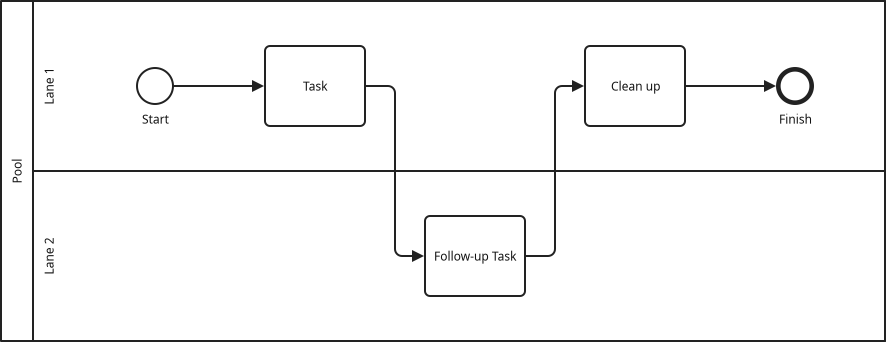
= Pool
== Lane 1
# Start
- Task ->handover
- Clean up <-handback
. Finish
== Lane 2
- Follow-up Task <-handover ->handbackAs you can see, Lane 2 does not start with a start event. Instead it starts off with an incoming
sequence flow landing.
Message Flows
Inter-pool communication is done via message flows. Those are added as dedicated statements:
MF <-from ->to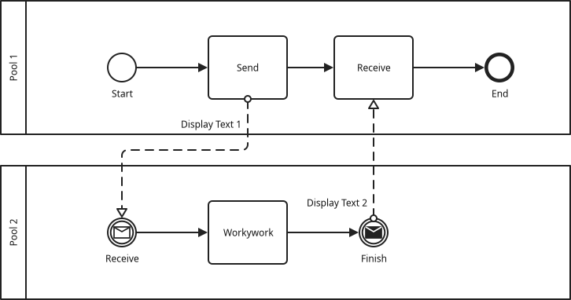
= Pool 1
# Start
- Send
- Receive
. End
= Pool 2
# Receive
- Workywork
. Finish
MF Display Text 1 <-p1-send ->p2-recv
MF Display Text 2 <-p2-finish ->p1-recvA message flow statement is special in that it does not represent a node, but only a single arrow.
Hence it must have exactly one incoming arrow ←from which designates the source, and →to which
designates the target.
While with gateways you had to match the labels of the X →lbl and - activity ←lbl statements, the from and to
labels can use fuzzy matching. That is, you can specify some shortened version of the source /
target node display text as
the label, and that shortened version then looks through all previously defined nodes for the best
match. As you can see, the pool display text (and actually also the lane display text, if it were
present), can be used as well in the label, whereas you should first specify the pool components (if
you want to use some), then the lane components (if you want to use some) and then the node
components. Sometimes it might be too tedious to think about a good fuzzy selector, or you are sure
that the display text will change in the future but you want stable references now. In that case you can
also make use of unique identifiers which are specified via the @identifier attribute as follows:
= Pool K
// ...
- Rest by the Tumtum Tree @abc
// ...
= Pool L
// ...
- Whiffle through the Tulgey Wood @def
// ...
MF <-abc ->def // Uses identifiers, not the display textData Elements
Data elements use the statment type OD for data object and SD for data store. They use incoming
←label and outgoing →label arrows to connect data associations with activities.
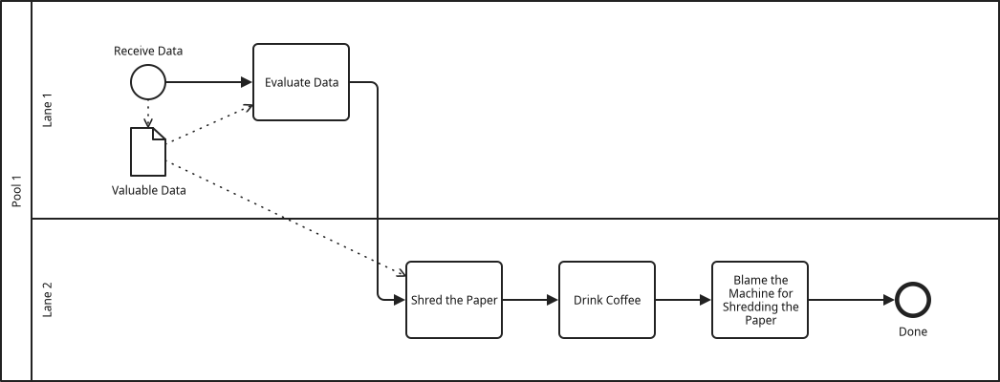
= Pool 1
== Lane 1
# Receive Data
- Evaluate Data ->label
== Lane 2
- Shred the Paper @shred <-label
- Drink Coffee
- Blame the Machine for Shredding the Paper
. Done
OD Valuable Data <-recv ->eval ->shredSince the source and targets for the data associations are nodes, the same fuzzy matching algorithm is used as is for message flows.
Semantic Data Elements - Data Continuations
In the previous example the data object was used in activities that lay close together on the
layouted diagram. There can be situations where (1) the diagram becomes larger and you don’t want to
have super long edges uglifying the diagram, (2) show that data goes through stages by giving it
different names, whereas it is still the very same data object, (3) send data across pools and show
that they are the same data object. For these situations, there is the data continuation syntax &
(with friends O& and S&) to create a new data icon in the layouted diagram, but communicate to
the reader (and to possible analysis extensions) that they are actually the same piece of data.
Why would you want that? Well, if you just create a plain image, it might not be worthwhile to learn this different syntax. However, if you use some analysis which requires this information (this is the case for the PE-BPMD extension) then you need to encode it, otherwise the analysis does not work. Further, it helps you to document the intent in the text file, i.e. tell future editors of the text file that they are semantically the same element.
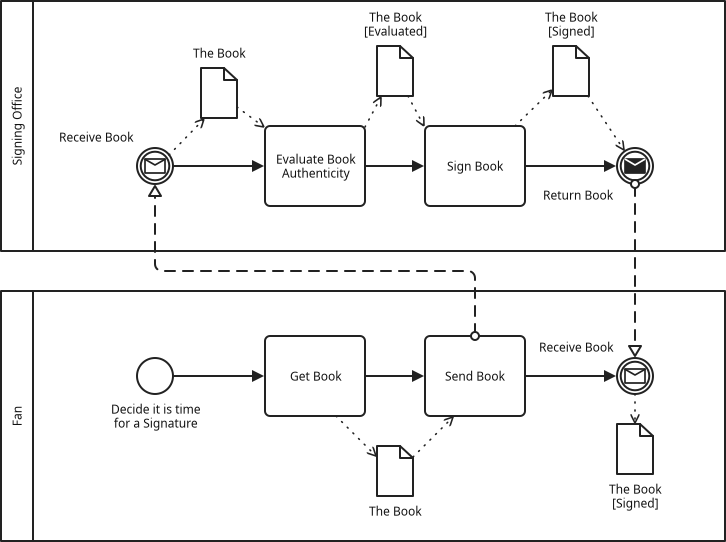
= Signing Office
# Receive Book
- Evaluate Book Authenticity
- Sign Book
. Return Book
= Fan
# Decide it is time for a Signature
- Get Book
- Send Book
. Receive Book
OD The Book <-fan-get ->fan-send
& The Book <-office-receive ->office-evaluate
& The Book [Evaluated] <-office-evaluate ->office-sign
& The Book [Signed] <-office-sign ->office-return
& The Book [Signed] <-fan-receive
MF <-fan-send ->office-receive
MF <-office-return ->fan-receiveIn the given example you could argue whether the book that is now augmented with a signature is actually a new object, but this is a question which very much depends on the use case. But you get the idea of what you could do with the feature.
Further, you might want to modify the icon of a data continuation, which is possible using S& and D& as follows:
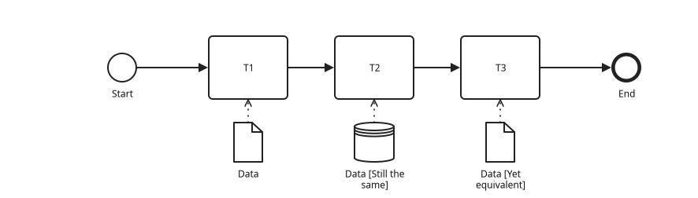
# Start
- T1
- T2
- T3
. End
OD Data ->t1
S& Data [Still the same] ->t2
O& Data [Yet equivalent] ->t3Data - Full Syntax
-
ODData Object -
SDData Store -
<DData Input -
>DData Output -
&A continuation of the previous data object, to indicate that a new symbol should be used in the diagram but it’s still part of the same semantic object. -
O&Data Continuation with a Symbol Change -
S&Data Continuation with a Symbol Change -
<&Data Continuation with a Symbol Change -
>&Data Continuation with a Symbol Change
Recommended Structure of a .bpmd File
// Roughly:
// (1) Sequence Flows
// (2) Data Flows
// (3) Message Flows
// (4) Other directives (more about them later)Pools, lanes and their contained events and tasks are naturally grouped. For data elements and message flows the recommendation is to keep data objects at the end of the pool or lane where they are used, or after the last pool if they stretch across multiple pool.
For message flows it is recommended to keep them after the last pool after any data elements. This way a reader knows where to look for what kind of statement, and they don’t have to search through the whole file.
Also be aware that node fuzzy matching only looks at nodes which have been defined previously. So if the referenced node is only coming later, it cannot be found. Therefor, you cannot put data objects or message flows at the very top, as then no events / tasks have been defined, yet.
Boundary Events
Boundary events are added through their own statements right below the task which they are attached to.
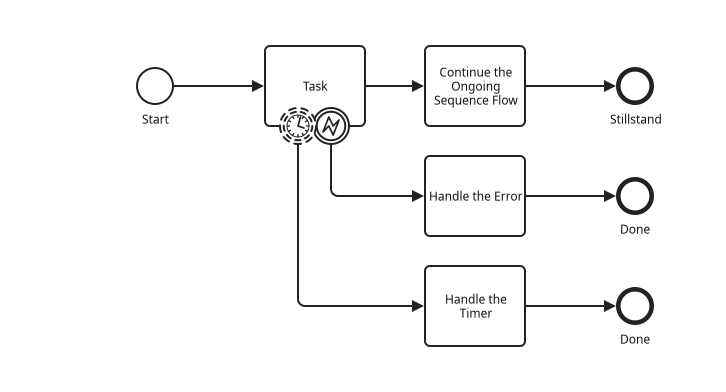
# Start
- Task
E! ->handle-error
T+ ->handle-timer
- Continue the Ongoing Sequence Flow
. Stillstand
- Handle the Error <-handle-error
. Done
- Handle the Timer <-handle-timer
. DoneThis is the list of supported boundary events:
-
Boundary Event Interrupting
-
M!Message event. -
T!Timer -
C!Conditional -
S!Signal -
E!Error -
^!Escalation -
<!Compensation -
X!Cancel -
#!Multiple(not yet supported since I don’t know how the XML looks like.) -
+!Multiple Parallel(not yet supported since I don’t know how the XML looks like.)
-
-
Boundary Event Non-Interrupting
-
M+Message event. -
T+Timer -
C+Conditional -
S+Signal -
^+Escalation -
#+Multiple(not yet supported since I don’t know how the XML looks like.) -
++Multiple Parallel(not yet supported since I don’t know how the XML looks like.)
-
Events - Full Syntax
-
Event statements
-
.#None event. -
Shorthand for.orM#, depending on whether a message flow is connected. -
M#Message event. -
T#Timer -
C#Conditional -
>#Link -
S#Signal -
E#Error -
^#Escalation -
<#Compensation -
X#Cancel -
##Multiple -
+#Multiple Parallel
-
-
End Event statements
-
..Blank end event -
.Shorthand for..orM., depending on whether a message flow is connected` -
M.Message event -
S.Signal -
E.Error -
^.Escalation -
!.Termination -
!Shorthand for!.. -
<.Compensation -
X.Cancel -
#.Multiple
-
In some situations it can be automatically deduced whether an event is throwing or catching, e.g. if a message flow is attached for a message event, or if you use an event for which only one form is legal. In the other cases, you can explicitly specify the event type:
-
M# Some Event ~throw: Creates the throwing icon -
M# Some Event ~catch: Creates the catching icon
Activities - Full Syntax
-
.-A regular Task (task types, only applicable for regular tasks, are explained in the next section. They are modeled with an additional attribute) -
-Shorthand for.- -
S-Subprocess(Must match the name (or ID?) of aS=(not supported yet) -
C-Call Activity(not supported yet) -
!-Event Subprocess Interrupting(not supported yet) -
+-Event Subprocess Non-Interrupting(not supported yet) -
T-Transaction(not supported yet)
Further, tasks can have some additional icons attached to them. This is controlled via the
~something attribute[1]:
-
.- ~send: Task with message send symbol -
.- ~receive: Task with message send symbol -
.- ~manual: Manual task type -
.- ~user: User task type -
.- ~script: Script task type -
.- ~service: Service task type -
.- ~businessrule: Business rule task type -
.- ~multiple: Multiple instance task type (also works for pools!) -
.- ~loop: Multiple instance task type -
.- ~adhoc: Multiple instance task type -
.- ~compensation: Multiple instance task type
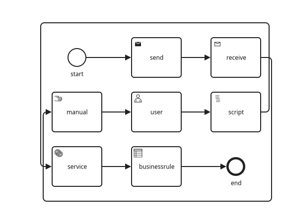
# start
- send ~send
- receive ~receive
- manual ~manual
- user ~user
- script ~script
- service ~service
- businessrule ~businessrule
. end
// Ignore this one for now, it is just to reduce the width of the diagram
[place @manual below @start]
[place @service below @manual]Grouping Elements
NONE OF THIS WORKS, YET
-
P==Pool (can have the~multipletype to become a Multiple-Instance Participant) -
====Synonym forP=. -
L===Lane -
S==Inner content of a subprocess -
C==Inner content of a call activity -
!====Event Subprocess Interrupting (they are put into the lane where they are defined) -
+====Event Subprocess Non-Interrupting (they are put into the lane where they are defined) -
(In this case one can add additional `=to allow for better visual highlighting of groups)
Placement: Steer the Layout Algorithm
You will likely encounter generated diagrams where you see a potential for a better arrangement of nodes than what the algorithm was capable of producing. bpmd gives you a small amount of tools to tweak node positioning by using such special extension statements:
-
Force two nodes into the same vertical layer:
-
[place @node-a above @node-b] -
[place @node-a below @node-b] -
[place @node-a above or below @node-b]
-
-
Force one node into another layer than another node:
-
[place @node-a left of @node-b]
-
In the future I might expand this to also exclude right of, left or right of, higher than, lower than and higher or lower than. Input for other ideas is welcome.
Using these placement instructions, you can for example break a long sequence of statements into a new line, or you can better align critical nodes across pools.
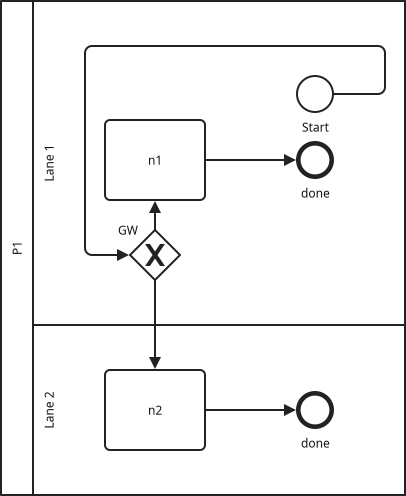
= P1
== Lane 1
# Start
X GW ->out
- n1 <-out
. done
== Lane 2
- n2 <-out
. done
[place @n1 above @gw]
[place @n2 below @gw]
[place @gw left of @start]~ (Tilde for Type) instead of new first-letter mnemonics, as letters are clashing (service and subprocess) and might clash more if there will be more elements in a future version of BPMN. These task types also seem to be usually added when refining the process, so it is not necessarily a fundamental property of the thing to be a manual task type, so it does not need to be on the left hand side. Also, it might be required later to add some information to e.g. script thing, but I am not sure about that.